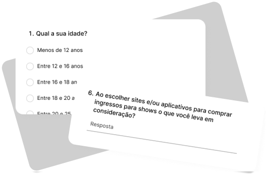
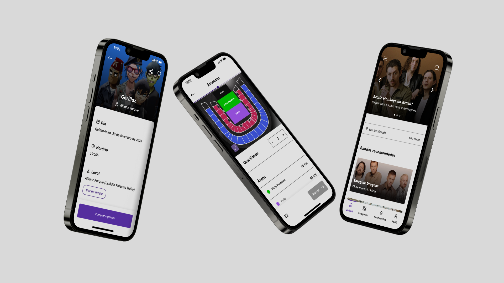
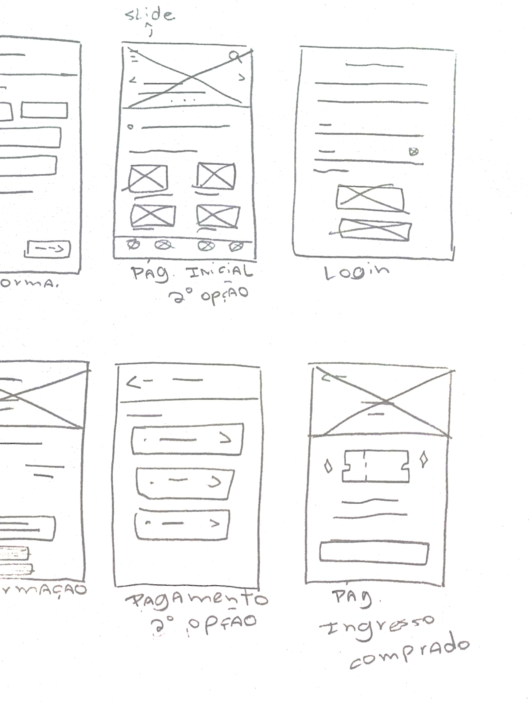
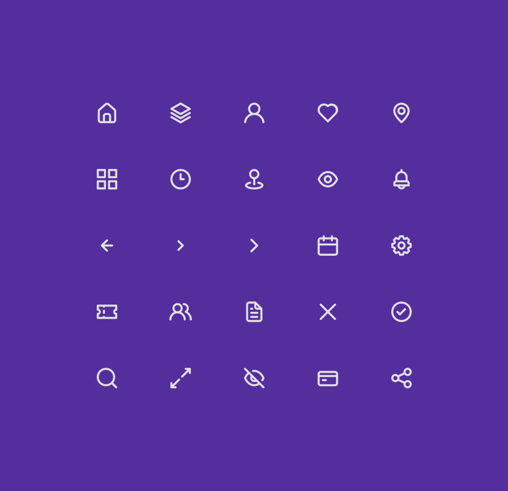
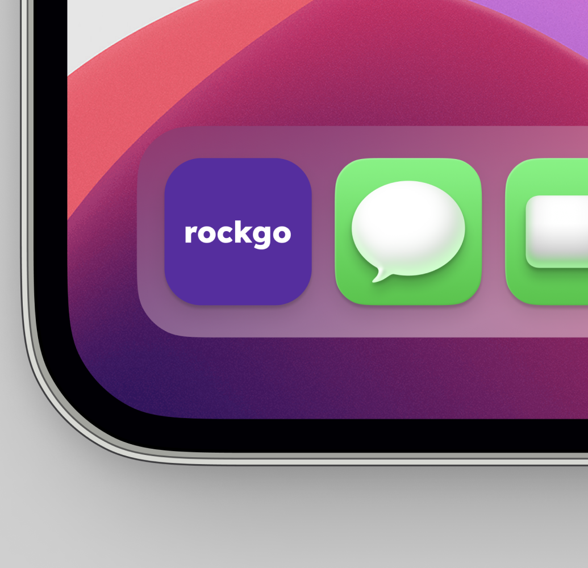
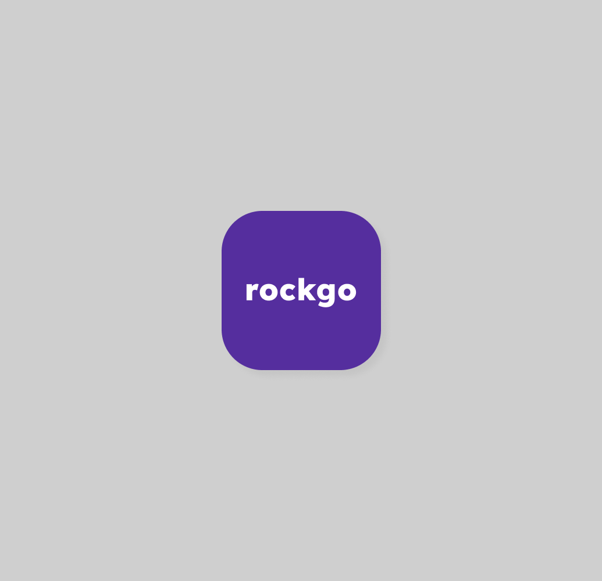

Problema
"Como podemos criar uma nova plataforma segura e prática onde amantes do rock consigam comprar ingressos
para shows e ficar sabendo sobre novos eventos dentro do mundo do rock?."
Pesquisa inicial + descobertas 🔎
“Mais agilidade na entrada do evento, comodidade aos convidados, armazenamento de banco de dados
e rapidez no repasse do valor dos ingressos são alguns dos principais motivos que fazem com que a venda de
ingressos online cresça cada vez mais.” - lets.events. A estratégia de venda de ingressos online vem ganhando
cada vez mais espaço no mercado, pois garante mais particidade, envolve rapidez e mais facilidade na compra.
Muitos produtores de eventos em todo o país estão adquirindo ou já adquiriram o uso de uma plataforma - própria
ou terceirizada - para hospedar seus eventos.
Entendendo o usuário
Com os dados apresentados em mente, foi conduzido pesquisas via formulários com diferentes grupos para entender
suas dificuldades e necessidades ao comprar ingressos para shows utilizando serviços online.
Alguns insights coletados:
- Foi constatado que 80% dos usuários fazem uso de sites ao invés de aplicativos para compras de
ingressos.
- Ao utilizar um serviço os entrevistados dizem prezar por facilidade, praticidade e segurança na hora da compra, algo que, segundo
eles dizem, faltam nos atuais sites de compras.
- 90% dos usuários relatam sobre bugs no processo de compra do ingresso em alguns dos sites de compras de ingressos, o que acabam não gerando uma boa experiência.

Conhecendo o usuário
Com base na pesquisa com o público, podemos definir melhor nossos usuários.
Traçando a jornada do usuário
Aqui, foi traçado todos os pontos de contato do usuário com serviços de compra de ingressos, como ele se
sente durante cada etapa e pontos de melhorias a serem feitos.
Analisando a concorr√™ncia 🔥
Nesta etapa, onde já estão definidos os usuários e que já foi traçada a jornada do usuário, é hora de realizar
uma auditoria competitiva com os atuais concorrentes de serviços de compra de ingressos que já estão no mercado.
Arquitetura de informação
Como muitos aplicativos e sites possuem um percurso de compra padrão, aqui foi feita a arquitetura de informação
do aplicativo com todas informações dispostas em cada tela.
Objetivo
"Um aplicativo de compra de ingressos para eventos de rock, prático e acessível
que notifica os usuários de novos eventos e possui um fluxo de compra simples."

Wireframes no papel ✏️
Chegando na parte criativa do processo, pude colocar a mão no lápis e papel e começar a traçar algumas ideias de
tela seguindo o fluxo principal do usuário. Ao todo foram desenhados 40 wireframes.


Protótipo de baixa-fidelidade
Aqui, foi feito o protótipo de baixa-fidelidade seguindo o fluxo principal do usuário desde a tela de cadastro
até a finalização da compra.
Visual design 🎨




O aplicativo
01
Entrando no aplicativo
Ao entrar no aplicativo pela 1° vez, o usuário tem a opção de fazer cadastro ou login para utilizar o app,
haverá também a permissão para utilizar a localização do dispositivo, visto que o aplicativo usa o GPS
para procurar shows na área em que o usuário mora.
02
Navegando no aplicativo
O aplicativo possui um menu de navegação (inicial, categorias, notificações, perfil) que conectam as telas
onde o usuário pode acessar as categorias de eventos, visualizar notificações e acessar o perfil para ver
ingressos favoritados, ingressos comprados ou alterar alguma configuração de conta.
03
Comprando os ingressos üéüÔ∏è
O percurso de compra passa por telas de: adicionar informações pessoais, escolher a quantidade e áreas do
ingresso, área de pagamento, resumo da compra e a tela de confirmação da compra.
Aprendizados 💡
Durante o processo de desenvolvimento desse projeto durante os 5 módulos do certificado
de UX Design do Google, aprendi sobre o processo de Design Thinking, o qual foi baseado esse projeto, foi feitas
pesquisas com usuários, ideação, idealização de ideias, muitos esboços, dois testes
de usabilidade conduzidos, a criação de um design system com padrões de interface e muitas telas desenhadas.
Para ver o processo completo em PDF:
Apresentaçãoarrow_outward